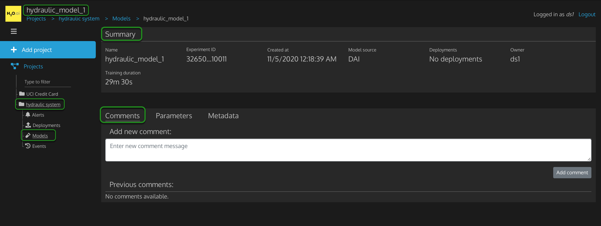
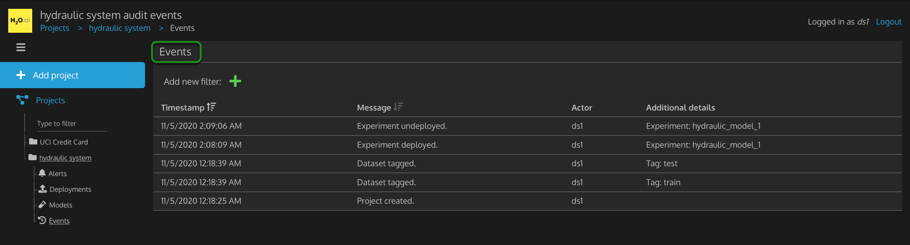
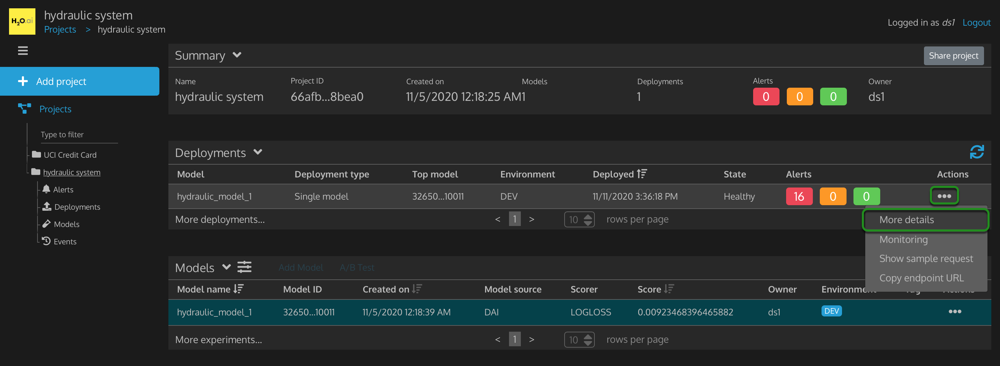
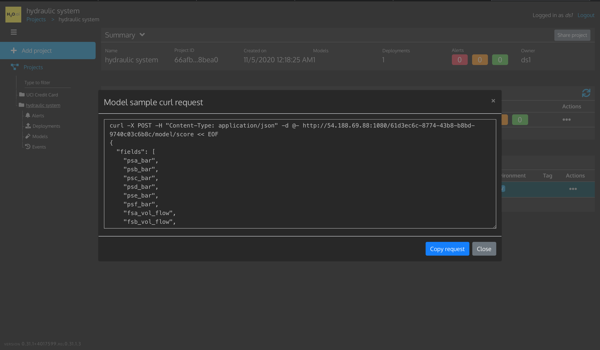
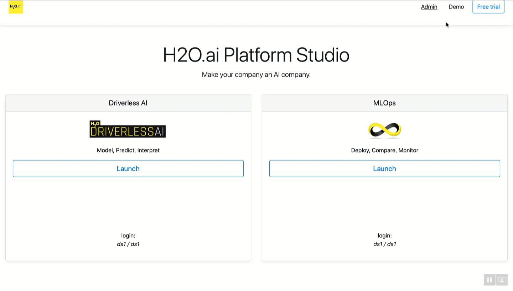

MLOps(Machine Learning Operations) is responsible for putting Machine Learning models into production environments. Before having these technologies that make it easier to deploy models into production, operation teams had to manually go through the process of production deployment, which required talent, time, and trust. To help make this effort easier for operations teams, H2O.ai developed H2O MLOps. H2O MLOps has the following capabilities: production model deployment, production model monitoring, production lifecycle management, and production model governance. Such capabilities can enable operation teams to scale their model deployments to 50, 500, 1,000, and more models in a timely manner.
In this tutorial, you will predict the cooling condition for a Hydraulic System Test Rig by deploying a Driverless AI MOJO Scoring Pipeline into a test development environment (similar to production) using H2O MLOps. After going through this tutorial, you will be able to recognize several features of the MLOps UI, particularly how to deploy and monitor a hydraulic model. As well, this tutorial will cover several concepts around Machine Learning Operations.
- A Two-Hour MLOps Test Drive: Test Drive is H2O.ai's Driverless AI and MLOps on the AWS Cloud. No need to download software. Explore all the features and benefits of the H2O Automatic Learning Platform and MLOps.
- Need a Two-Hour MLOps Test Drive? Follow the instructions on this tutorial:Getting Started with MLOps Test Drive.
- A general understanding of Driverless AI
- For a general overview of Driverless AI, you can follow this tutorial: Tutorial 1A: Automatic Machine Learning Introduction with Driverless AI
Note: Aquarium's MLOps Test Drive lab has a license key built-in, so you don't need to request one to use it. Each MLOps Test Drive instance will be available to you for two hours, after which it will terminate. No work will be saved. If you need more time to further explore H2O.ai MLOps, you can always launch another Test Drive instance or reach out to our sales team via the contact us form.
MLOps 0.31.1 and Driverless AI 1.9.0.3 can be launched from the H2O.ai Platform Studio.
To launch Driverless AI, click the Launch button located in the Driverless AI section, a new tab will open.
- Agree to the Terms
- Click Login with OpenID
- For Log In, you can enter
ds1/ds1ords2/ds2
EX:

To launch MLOps, click the Launch button located in the MLOPs section, a new tab will open.
Note: If you already login to Driverless AI using either credential, you will not be required to log in when trying to access MLOps. The Studio will sign you into both platforms when you login into one platform (with ds1/ds1 or ds2/ds2: each credential is its own account (profile) with Driverless AI and MLOps).
- Click Login with OpenID Connect
- For Log In, you can enter
ds1/ds1ords2/ds2
EX:

H2O.ai MLOps ties into Driverless AI and allows you to export your Driverless AI experiments into an MLOps project that can be viewed and shared from a single site. It also allows you to import, view, and share regression and classification models from H2O-3. H2O MLOps is a complete system for the deployment, management, and governance of models in production with seamless integration to H2O Driverless AI and H2O open source for model experimentation and training.
Figure 2: H2O.ai Platform Studio Splash Page
For this tutorial, we will be using a prebuilt experiment linked to a project titled hydraulic system. The MLOps dashboard already has the Driverless AI hydraulic system project for this tutorial; it was shared with MLOps when the project was created. If you want to access the project, you need to access Driverless AI from the H2O.ai Platform Studio Splash Page. The prebuilt project was built under the following credentials: ds1/ds1. Accordingly, you will need to access Driverless AI with such credentials to see the project.
The Driverless AI experiment is a classifier model that classifies whether the cooling condition of a Hydraulic System Test Rig is 3, 20, or 100. By looking at the cooling condition, we can predict whether the Hydraulic Cooler operates close to total failure, reduced efficiency, or full efficiency.
Hydraulic Cooling Condition | Description |
3 | operates at close to total failure |
20 | operates at reduced efficiency |
100 | operates at full efficiency |
The Hydraulic System Test Rig data for this tutorial comes from the UCI Machine Learning Repository: Condition Monitoring of Hydraulic Systems Data Set. The data set was experimentally obtained with a hydraulic test rig. This test rig consists of a primary working and a secondary cooling-filtration circuit connected via the oil tank [1], [2]. The system cyclically repeats constant load cycles (duration 60 seconds) and measures process values such as pressures, volume flows, and temperatures. The condition of four hydraulic components (cooler, valve, pump, and accumulator) is quantitatively varied. The data set contains raw process sensor data (i.e., without feature extraction), structured as matrices (tab-delimited) with the rows representing the cycles and the columns the data points within a cycle.
Hydraulic System Test Rigs are used to test Aircraft Equipment components, Automotive Applications, and more [1]. A Hydraulic Test Rig can test a range of flow rates that can achieve different pressures with the ability to heat and cool while simulating testing under different conditions [2]. Testing the pressure, the volume flow, and the temperature is possible by Hydraulic Test Rig sensors and a digital display. The display panel alerts the user when certain testing criteria are met while displaying either a green or red light [2]. Further, a filter blockage panel indicator is integrated into the panel to ensure the Hydraulic Test Rig's oil is maintained [2]. In the case of predicting cooling conditions for a Hydraulic System, when the cooling condition is low, our prediction will tell us that the cooling of the Hydraulic System is close to total failure, and we may need to look into replacing the cooling filtration solution soon. In our case, the shared project classifies the probability of the cooler condition is 3, 20, or 100.

Figure 1: Hydraulic System Cylinder Diagram
From a general pespective, a Hydraulic Test Rig consists of the following:
- A primary and secondary cooling filtration circuit with pumps that deliver flow and pressure to the oil tank (the box at the bottom)
- A pressure relief control valve for controlling the rising and falling flows
- A pressure gauge
Open MLOps to See Project

Figure 10: Open MLOps to See Driverless AI Project
If you have not launched MLOps from the H2O.ai Platform Studio Splash page, proceed to the following instructions:
1. Click the Launch button located in the MLOps section of the studio
2. Click Log in with OpenID Connect
3. For Log In, enter ds1/ds1
Note: if you already logged into Driverless AI, you won't have to enter login credentials for MLOps.
Regard the hydraulic system project on the My Projects page. Disregard the other project, as it will not be used in this tutorial.
Login to MLOps as a ds2 user from a separate browser tab

Figure 11: Open MLOps as ds2 user
As you can see in the gif above, in the MLOps dashboard for ds2 user, no Driverless AI projects have been shared with that user yet.
If you need help following along with the gif above, follow the instructions below to login to MLOps as ds2.
1. If earlier you launched MLOps in google chrome, then open a new Chrome incognito window or a different browser like Firefox.
2. Go to the H2O.ai Platform Studio Splash Page
3. Launch MLOps
4. Click Login with OpenID Connect
5. For Log In, enter ds2/ds2
Later we will explore the MLOps UI, share a project from ds1 user to ds2 user, deploy the hydraulic model, and monitor the model. Before that, let's become familiar with Machine Learning Operations concepts.
Deep Dive and Resources
If you look through various analyst firms and research organizations, you will find varying percentages of companies that have deployed AI into production. However, depending on the type of organization and where they are in their AI journey, you will find universally that most companies have not broadly deployed AI & Machine Learning in their companies. According to a New Vantage Partners Survey, only 15% have some AI deployed in production because various challenges come into play when producing Machine Learning models [2]. Only 15% have deployed AI broadly into production - because that is where people and process issues come into play.
AI Lifecycle with H2O.ai Products

Figure 12: AI Lifecycle with H2O.ai Products
In the above AI lifecycle with H2O.ai Products (H2O AI Platform), business users can solve or improve productivity issues, customer experience issues, and other arrays of problems. Business users will engage teams of data engineers and data scientists to build models. Data engineers can use H2O.ai Wave (Apps) for data exploration, while data scientists can use Driverless AI for model training. Once the data scientists feel they have a high-quality model base on their experimentation and exploration, those models are typically validated by a data science team. Through the H2O AI Platform, data scientists can use Driverless AI for model testing and validation. Once you have a model where it looks like it performs well and does what you expect, it will be handed over to a production team. That is what you see on the lower right-hand side of the diagram. That production team will be responsible for deploying that model into a production environment and ensuring that the model is serving business applications' needs. DevOps Engineers and ModelOps Engineers can use MLOps for Driverless AI model production testing, deployment, and lifecycle management. From there, once you have a model that works, you will typically integrate that model into those business applications. Application Developers can use the H2O.ai Wave SDK to incorporate the MLOps deployed model into the AI application to bring the end-user predictions. Hence, a downstream service can be created in the H2O AI Platform to make sure you can meet the service-level agreement or an array of other desires.
Barriers for AI Adoption at Scale

Figure 13: Barriers for AI Adoption at Scale
The Challenge of Model Deployment
With Machine Learning Operations, it is about getting that initial machine learning model into a production environment. That might seem straightforward if you think that the model that came from the data science team is ready for production use. However, you will often find that the model that comes from the data science team kind of gets thrown over the wall to the production team. As a result, production teams are required to look at this model object, which is written in Python or R. And for the most part, production teams do not have the tools on the IT side of the house to deal with Python or R. [3]
Often, there is a mismatch between the types of tools and languages that the data science team and the IT team use that will cause a huge disconnect, preventing the model from being deployed. Not only that, these two teams are very different in their approach. To image this difference, a data science team will say, "there was a business challenge; we were asked to build a model that could predict the outcome, and we have done that." The data science team will then say, "our model predicts very well, and it is very accurate." Next, the data science team will hand the model over to the IT team, and the IT team will have an entirely different set of criteria to evaluate that model. The IT team will look for things like does it perform? Is it fast? Can we scale this model out into production so that it will be responsive? Can we put it into a system like Kubernetes so that it will be resilient? In general, the IT team has a different set of criteria they are looking for compared to the data science team, so that mismatch can cause a lot of models never to be deployed into production. [3]
The Challenge of Model Monitoring
Once you have a model up and running, a lot of times, people will realize that they need a partially different kind of model monitoring to make sure that the model is healthy in production. They have existing software tools that allow them to monitor things like the service and whether the service is up and running and responding to requests. But what they do not have is specific Machine Learning monitoring tools that would allow them to see if the model is still accurate. In some cases, not having monitoring can make some people very uncomfortable because they do not know how the model is behaving. They may not be willing to deploy that model into production because they are unsure about how it will behave. So, they may not be willing to take that risk. [4]
The Challenge of Model Lifecycle Management
For Machine Learning models to maintain their accuracy in production, they will sometimes need frequent updates. Those updates need to be done seamlessly not to disrupt the services to those downstream applications. Often, companies will find that they do not have a plan for how they are going to update the model and how they are going to retrain it. Additionally, they do not have a way to roll this model out into production seamlessly. So, they can not even deploy it out in the first place because they do not have a plan for managing it.[5]
The Challenge of Model Governance
For regulated industries, you will find that if they do not have a plan for how they will govern their deployed models, they might not be able to deploy the models in the first place. Governance means you have a plan for how you will control access and have a plan for how to capture information about the models being deployed into production, which you can use for legal and regulatory compliance. So, you will find if you do not have a plan for these things, especially if you are in a regulated industry, you might not be able to deploy the model in the first place. [6]
How "Success" Looks Like Today

Figure: 14 A small fraction of a real-world ML system is of ML code [8]
As you can imagine, those challenges we discussed earlier create some significant barriers, but people are still successfully running and deploying models in production today. This diagram above is pulled from the Hidden Technical Debt in Machine Learning Systems publication, written by folks at Google. This publication discusses how deploying Machine Learning in production; specifically, the model itself, is a relatively small part of the overall codebase when deploying into production. You can see this small orange box in the middle of the diagram, the Machine Learning code. These other large boxes are the other things you need to do to ensure that the machine learning model is running properly. Only a small fraction of real-work ML systems are composed of the ML code, as shown by the middle small orange box. The required surrounding infrastructure is vast and complex. Henceforward, "success" today, to an extend, looks like the diagram above where the larger boxes are working properly, and the machine learning model is running. [7]
How Does Success Look Like Today With Companies Trying to Deploy Machine Learning Models in a Very Manual Way or by Themselves?
Each time we want to deploy a new model into production, data science and production teams have to perform an intense and manual effort. They have to get the model up and running, which means writing a lot of custom code, wrapping that model in the code, and deploying it to production. That code tends to be brittle because it is all custom-written, and when it breaks, there is a mad scramble to fix things. It turns out that many people do not have a plan for what they are going to do when something breaks or when the model stops working well. So, when something stops working properly, it is all hands on deck. The data science team has to stop what they are working on, and the IT team mobilizes their resources, and suddenly, you have this entire team trying to figure out what is wrong with this model. Meanwhile, we talked about that service you set up earlier in AI Lifecycle; supplying results to a downstream application is offline because there was not a plan for what not to do with this service should there be a problem.[7]
In many cases, models are deployed into production, but there is no monitoring for the Machine Learning part of the code. That service could be responding to the request, but it may not be accurate anymore. You can imagine that even the ongoing management of such a system with a lot of custom code requires a team of people. So one of the most significant symptoms here is that leaders in these organizations will say their data scientists are embroiled in these projects. They spend 60% to 80% of the time just managing these production projects and are not doing new data science projects. We have heard that people will say they want their data scientists to be doing data science, not production. However, once you get a few Machine Learning projects up and running in production with the effort of a team of people constantly keeping these projects up and running, business leaders want more than just one or two projects. Business leaders want more of these projects running because they typically see increased efficiency by, say, 10%, and they see a generated increase in revenue by around 2 million dollars. Therefore, now business leaders want to deploy those technologies across various use cases in the business. So once you have a little success even with manual means, your business is going to want to scale from not just two to four, but two to twenty or two to fifty Machine Learning models in production. So that is what many organizations want and what they consider success, which is a very challenging situation. [7]
What is MLOps?
MLOps is known as Model Operations. In MLOps, we talk about how do we put Machine Learning models into production environments. MLOps is a new set of technologies and practices that you need to have in your organization to make sure that you can successfully deploy and manage models in production. MLOps is communication between data scientists and the operations or production team. It's deeply collaborative, designed to eliminate waste, automate as much as possible, and produce more prosperous, more consistent insights with machine learning. In this system, you want to have the right people doing the right things to have your data scientists only focus on producing models for the production team. If there is ever an issue, the production team can go back to the data science team and share the right information with them, and they can work together to fix a problem or rebuild a model, etc. In the end, MLOps allows you to scale your adoption of Machine Learning. If you do not have this technology in place or collaboration, there are no ways you can scale to 20, 50, or 100 models, much less 10,000 models in production, which is where a lot of us are heading. [9]
What are the Key Components of MLOps?

Figure 15: MLOps Key Capabilities
The key areas of MLOps are as follows:
Production Model Deployment
- With MLOps, we want to automate as much of the process of deploying model artifacts into production and facilitating that collaboration between teams to get the artifacts over into production and get them up and running. [10]
Production Model Monitoring
- A lot of systems are not designed with Machine Learning in mind. So, for MLOps, we want to monitor service levels, data drift, etc. In the case of data drift, we want to know whether the data we trained on is similar to the data we see in production. We also want to monitor things like accuracy, where we can see if the model is continuing to provide reliable and accurate results. [10]
Production Lifecycle Management
- For production lifecycle management, we want to provide the ability to troubleshoot, test, and seamlessly upgrade models in production and even rollback models. We want to have other options if we have a problem in production. [10]
Production Model Governance
- We want to ensure that models are safe and compliant with our legal and regulatory standards with things like access control, audit trails, and model lineage for production model governance. [10]
Model Deployment

Figure 16: Model Code, Runner, Container, Container Management
Earlier in our AI Lifecycle flow diagram, we saw that we built a model, and now we are outputting that model from our data science system. So, we end up with some code that can receive a request with certain data and respond with a prediction in the right environment. If you are running this model within a vendor infrastructure, what you will find is that you can deploy this model out to a given vendor's infrastructure. This deployment will allow you to do things like make a rest request to that model and get a response. That is because the vendor has done a lot of work behind the scenes to deploy that model into production. [11]
So, what steps must one go through to make a rest request and get a scored response? The first step requires having a runner to deploy this code. This runner code itself can't respond to your request; it is just a bunch of code. The second step requires having something with all the information for the rest interface and dependencies or libraries for that specific model type to respond to a request. So if it is a Python model, you will probably need the libraries to run that Python model. There is a bunch of code that you will need to make this model accessible and do the scoring. The third piece requires having a container. You will need to wrap the model with all of its dependencies and everything you need to do the scoring. Then you are dropping this wrapped model into a container, which allows you to put this model into a container management system. This container management system will allow you to replicate this model for scaling and supporting high-performance environments and more. Kubernetes is the most well-known container management system.
Similarly, Docker is the most common container environment. So, typically you will Dockerize your model and put it into a Docker container. Then you will deploy one or more containers out into Kubernetes. [11]

Figure 17: Load Balancer, Request, Response
The diagram above shows the Kubernetes container management system is going to deploy these model containers behind a load balancer. Depending on how many replicas you tell Kubernetes to set up, it will replicate your model code, it will replicate your scoring code, and it will manage the load balancing across those different nodes. So the beauty of Kubernetes is it will automatically replicate your model code. It will manage the request/response, and if one of those pods stops responding, it will route the request to another pod and spin up additional pods. So, you can see why Kubernetes has become very popular for this type of deployment. [11]
This is a rudimentary look at deployment, but it gives you an idea of the kind of tasks your production team needs to handle. If you are trying to do it manually, it gives you a look at the kind of code that you will have to write to support each model deployment. [11]
Monitoring for Machine Learning Models

Figure 18: Levels of Monitoring for Machine Learning Models
In MLOps, there are different levels of monitoring. Level 1 is service monitoring. You can get service monitoring from various software monitoring tools, but you may be surprised how many people still do not have this. They do not even know if a specific model responds in a timely fashion in their production environment. The first thing you want to make sure you have is some service-level monitoring. Is the service up and running? Is it responding within a reasonable timeframe to meet service level agreement (SLA) with downstream applications? Another thing you want to monitor is whether the service is using appropriate resource levels. If your model service starts to consume more resources than what is expected, that could affect the model and other models that are potentially sharing resources with that model. Service level monitoring is critical so that you have a level of comfort knowing that the service is responding and that you are delivering results to the downstream application that you are supporting with that model. [12]
Level 2 is drift monitoring. Drift monitoring is probably the most important monitoring element within Machine Learning operations. In drift monitoring, what you are looking at is the data in production and whether it is similar to the data used to train the model. Therefore, drift monitoring can tell us if our model is still accurate and whether our model's significant features are starting to have a considerable drift in production. It is a pretty good assumption that the model may not be responding in a way that it did in training. Another area of drift is the general context of the problem. We saw this a lot with COVID-19, where models would be trained, and not only was the data changing but the definition of the problem we were trying to predict. Monitoring will allow us to understand if the data and the features of the model are changing and whether the distribution of the target variable is changing. If the drift is detected, then there is a pretty good chance that the model is not doing a good job making predictions in production. [12]
Level 3 is accuracy monitoring. We want to track the predicted values that the model had and compare them with our applications' actual values. Accuracy Monitoring could be in real-time or batch. You may be thinking, why would one not do accuracy monitoring first? The truth is accuracy monitoring is notoriously difficult to do in production. If you are making a loan prediction to determine if someone is likely to repay a loan, then you will not know if they default on that loan until months or years into the future. So you can not track back the accuracy of that prediction for many of those predictions until years later. Also, the accuracy and the actuals are being tracked in some other system. You can imagine that even if you were doing this in eCommerce and this was about clicks on your website, you still need to get that click data from your website back to your monitoring system. So, there is an IT project that needs to happen to get that actual data back into a system and compare it with the predictions.
As you can see, accuracy monitoring may not be as easy as one might think. It may not actually work in a production situation, which leaves you with the first two levels of monitoring tools, especially level two as a set of pretty good monitoring tools. If you have those two levels of monitoring tools, you can be reasonably certain that your model is up and running and performing. [12]
Typical Model Lifecycle Flow for Production Lifecycle Management

Figure 19: Typical Model Lifecycle Flow
We already discussed monitoring, and now we will focus on lifecycle management. This is a deeper dive into the AI Lifecycle flow we looked at earlier, but with more details. [13]
In the experimentation process, we collect the data, prepare the data, engineer our features, pick the right algorithm, tune our model, and end up creating that model artifact. Now, the first question is whether the model artifact is ready for production. It would be best if you were very suspicious of any artifact that comes out of a hand-built process. You want to make sure that the model is robust. Many approve models by data science teams will break because no further evaluation is conducted on the model; it is just taken as good because it was done by a data science team, a huge mistake.
That is why that model artifact typically needs to go through a validation & back-testing process. That testing process should be done by a team other than the team that built that model artifact. If you are in a regulated industry, you will have a validation team to validate whether the model does what it's supposed to do. And such testing will focus on the accuracy of the model under a variety of conditions. [13]
What happens next is we ask whether the model is a good quality model or not? If the model is of good quality, we can push that model over to the production team, and that team can set that model up in a test environment where they can do what is called warm-up. The production team can see how that model performs when running in the production environment. If it is not good, what do you do? You will need to rebuild that model for production. If you have a model that predicts well, but it is not architected in a way that would be efficient to run in production, you will have to take that model and rebuild it to work in production. Such a rebuilding process should be done hand in hand with the data science team because, ultimately, you will have to rebuild that model again and again in production.
On another point, you do not want to take a built-in model Python, recode it in Java, assuming that it will run for two years in production. It may be a week from now that you need a new version of that model, and you do not want to be recoding it every time. So, you want to make sure that this rebuilding process is also scalable. Also, if you rebuild that model, it will have to go back through validation to make sure that it is thoroughly tested and works. Once you have a good model and it works well, you can start to warm it up in a production environment. That means you will package this up with Docker and deploy it out to Kubernetes; it will be in a test environment, and it may not be the actual production environment, but you are going to run it through its paces. You are going to put a load on it and see how it responds. [13]
Then the question we ask is whether this model is ready for production? If yes, now we can promote that model up to a scoring status. Now we can put that model up as a service, and we can say this model is good and performs well. We are going to promote it to production. We have gone from development to test to production, and we have a model in production that is exposed as a service and can be integrated into our downstream applications. So, now as a production team, we support that model and support that service as part of our IT infrastructure. However, what if the model does not work in production? What if we tested the model on this production environment, and we found that it does not perform as well as it needs to meet the SLA of our downstream apps. Well, we must rebuild the model. Now we need to take that information and go back and say this model is not performing fast enough or say it is not doing what we need it to do in production, and we are going to have to make those changes. The other thing you may find is the model is not resilient enough. We may find out that it did not deal with certain edge conditions that we have in production that we did not see in training, and so now we have to fix that. We might also need to add some additional code to the model to better respond to those conditions in production. In any case, the model will go back to the process again; anytime we rebuild the model, we need to make sure it will work; we need to warm it up and make sure that works. If it is production-ready, we can promote it for scoring. Once we have a service that is ready for scoring, now we have to monitor that service.[13]
So once we deploy our model, we will set up our monitoring around it and try to determine if the model is still good, accurate, and responsive. So we will run our monitoring suite on that model now and see if that model works or not, and if it is still working well, then we will keep monitoring it. What happens if the model is not working well? You will trigger an alert, and that alert will inform the operations team and potentially even the data scientists depending on the type of alert a problem has been detected. If the model is not working well, we will failover the model since our model is not working. So what do we do next? Ideally, we will not just leave that model that fails up and running; we have some process that says we have some other model we can go to, or we know how this system should respond for the next 24 hours while we fix the model. So, there is some process you will go through, so you can troubleshoot the model and understand what is happening and replace it in production. The most logical thing you can do is retrain that model on new data, which some hear as refitting. We say refit because we do not mean to completely re-tune the model; we mean refit on a new window of data, maybe more current data is a common fix, and then we will need to test that refitted model and make sure that it is working properly. We did not route that arrow from refit model on new data (Figure 19) up to validation & back-testing (Figure 19) because even in banks, you are not rebuilding if you are refitting. You often will not have to go back through validation. So you can refit on a new window of data, make sure you did not introduce some production issue into the model, and you should be ready to go and replace that model in production with a new version. [13]
So, hopefully, this overview workflow gives you an idea of what is going on in lifecycle management, and you can see that it is a pretty complex area. This box in the bottom part of the workflow diagram is production operations(Figure 19). They need to be able to have environments for things like development, test, and production. It is really important to understand that while this experimentation and training phase may take weeks or months, once we come down to the operations phase, that model you built-in data science could be running for months to even years in production. As a result, this production operations phase is really important for your business. Now that cool model becomes part of your business and becomes mission-critical to your business. That model gets embedded in your business, and you need a robust process for managing that model and making sure it is continuing to function correctly. [13]
Production Model Governance

Figure 20: Production Model Governance
Production Model Governance must be taken seriously for a variety of reasons. When we put code into production, we need to make sure that code is safe and that it is going to do what we expect as a business. So, production model governance ensures that the right people have access to that code, not the wrong people and that we can prove that. Additionally, production model governance is about ensuring that the service is doing what we expect and proving that. [14]
A lot of what we are doing in governance is tracking what is going on, and we are controlling access to make sure that the right people are using our service and doing what we expect. So, the first thing you want to look for is, do we have access control? If we build a system by hand, maybe everybody who has access to our git repo then has access to our model, and anybody who has access to that model could deploy a service and get it up and running. That is probably not how you want to run your production operations. When running your production operations, if you're going to have any code that will be moved to production, you should have regulated access and control to prevent accidental and detrimental edits in your code. You should also make sure you have control over the code itself, and you have control over the production environments where you are running that code. IT will probably have tight control over those production environments, but make sure that the right people have access to the code and the right people have access to production environments. [14]
You also want to make sure you have access to an audit trail. So within your production systems, you need to make sure you are tracking what is going on. So if you replace a model in production or you make changes to that model, you want to make sure you know when that happened, who did it, and ideally, you want to have some annotations there. These annotations would be notes to tell you why that change was made. Later on, as you are auditing either for legal needs or regulatory needs or even just troubleshooting, you can see what was going on. [14]
Next up for production governance is version control and rollback. Earlier, we discussed rollback, but you could think of it this way from a regulatory requirements perspective. You may have a lawsuit six months after the prediction was made that alleges that the prediction was biased. What are you going to do about it? You will need to go back in time and find the version of the model. You can do that through an audit trail. You may even have to reproduce that result from 6 months ago. As well, you will need a full version history of the models and all of the data used, and even the training data used to generate those models. [14]
Finally, for production governance, you will need controls in place to manage risk and comply with regulations for your industry. If you are in the banking sector, earlier we talked about the audit trails. You will probably have compliance reports that you will need to build and make sure that your controls are in place to do everything needed for compliance. So, there may be regulations that say you will need to write out a report on a particular model's performance, bias, etc. You need to make sure you have the right controls and systems in place to meet any requirements for your industry. [14]
MLOps Impact

Figure 21: MLOps Impact: Cost Savings, Stay out of jail, Increase profit
What Happens When We Use Technology for Machine Learning Operations Versus Manually Doing This? What Would You Expect to Happen?
The first thing that can happen is we save money as long as we have people effectively collaborating and working together. That means our data scientists are doing data science, our IT operations team is doing operations, and both teams are working together when appropriate for model deployment and management. Simultaneously, many people are not wasting time and are not hand-coding a bunch of brittle things. So, if you use a system like MLOps, you can hopefully yield cost savings and efficiency for your business. [15]
The second thing with MLOps is we need to maintain control of these systems. We need to manage the risk of deploying these models into production and having a repeatable, controlled, managed, and governed process to help us stay out of jail ultimately. So, maintaining control is a significant impact on Machine Learning operations. [15]
Finally, Machine Learning operations allows us to scale Machine Learning in production. So, we will be able to solve more problems for our business with the same resources. We do not need to hire many people because now we have technology in place and processes that will allow us to scale up our use of Machine Learning, deploy more models, and build more model services. Thus having this technology will enable us to increase revenues, profits, etc. So, the impact of MLOps varies. We can save money, control the risk to our business, control the risk to ourselves, and we can increase revenues and profits by scaling up Machine Learning across our business. [15]
MLOps Architecture

Figure 22: MLOps Architecture
In the MlOps Architecture Diagram Above, There Are Two Personas, Which Are the Data Scientists Working With Driverless AI and the Machine Learning (ML) Engineers Working With MlOps (a Model Manager).
The data scientists will build Driverless AI experiments, which use AutoML behind the scenes to do model training and develop the Driverless AI model. A Driverless AI model is a scoring pipeline. Driverless AI has two scoring pipelines: a Python scoring pipeline and a MOJO scoring pipeline. Once they have their model built in a Driverless AI experiment, the data scientist will link one or more experiments to a Driverless AI project. That Driverless AI project is then saved in the model storage.
From model storage, the ML Engineer uses MLOps, a Model Manager, to access a Driverless AI project saved in model storage. Then, they will either deploy the model to a development environment that simulates the conditions of the production environment or deploy the model to a production environment. MLOps deploys Driverless AI's MOJO scoring pipeline. As the model is deployed into a development or production environment, it is deployed on Kubernetes. The end-user can make scoring requests to the model REST service, so the model performs predictions and returns the scoring results. As the predictions are being made, predicted data is being saved in influx DB and used by Grafana dashboard to generate visualizations. If it were running, we would see the Grafana dashboard in Model Manager for monitoring the model's activity as it makes predictions.
Deep Dive and Resources
- [1] 1:22 - 3:07 | AI Foundations Course, Module 7: Machine Learning Operations, Session 1: MLOps Overview, AI Lifecycle, Speaker: Dan Darnell
- [2] 3:06 - 4:03 | AI Foundations Course, Module 7: Machine Learning Operations, Session 1: MLOps Overview, NVP Survey Quote, Speaker: Dan Darnell
- [3] 4:04 - 6:20 | AI Foundations Course, Module 7: Machine Learning Operations, Session 1: MLOps Overview, Barriers for AI Adoption at Scale, Deployment, Speaker: Dan Darnell
- [4] 6:21 - 7:18 | AI Foundations Course, Module 7: Machine Learning Operations, Session 1: MLOps Overview, Barriers for AI Adoption at Scale, Monitoring, Speaker: Dan Darnell
- [5] 7:19 - 8:09 | AI Foundations Course, Module 7: Machine Learning Operations, Session 1: MLOps Overview, Barriers for AI Adoption at Scale, Lifecycle Management, Speaker: Dan Darnell
- [6] 8:10 - 8:47 | AI Foundations Course, Module 7: Machine Learning Operations, Session 1: MLOps Overview, Barriers for AI Adoption at Scale, Governance, Speaker: Dan Darnell
- [7] 8:48 - 14:09 | AI Foundations Course, Module 7: Machine Learning Operations, Session 1: MLOps Overview, What "Success" Looks Like Today, Speaker: Dan Darnell
- [8] Hidden Technical Debt in Machine Learning Systems
- [9] 14:10 - 15:51 | AI Foundations Course, Module 7: Machine Learning Operations, Session 1: MLOps Overview, The Solution MLOps, Speaker: Dan Darnell
- [10] 15:52 - 17:39 | AI Foundations Course, Module 7: Machine Learning Operations, Session 1: MLOps Overview, MLOps Key Capabilities, Speaker: Dan Darnell
- [11] 17:40 - 22:05 | AI Foundations Course, Module 7: Machine Learning Operations, Session 1: MLOps Overview, Model Deployment, Speaker: Dan Darnell
- [12] 22:06 - 27:20 | AI Foundations Course, Module 7: Machine Learning Operations, Session 1: MLOps Overview, Monitoring for Machine Learning Models, Speaker: Dan Darnell
- [13] 29:00 - 38:52 | AI Foundations Course, Module 7: Machine Learning Operations, Session 1: MLOps Overview, Typical Model Lifecycle Flow, Speaker: Dan Darnell
- [14] 41:40 - 45:32 | AI Foundations Course, Module 7: Machine Learning Operations, Session 1: MLOps Overview, Production Model Governance, Speaker: Dan Darnell
- [15] 45:33 - 48:12 | AI Foundations Course, Module 7: Machine Learning Operations, Session 1: MLOps Overview, MLOps Impact, Speaker: Dan Darnell
- Diagram: What is a MOJO?
- Diagram: What is a Scoring Pipeline?
Projects Dashboard Tour

Figure 23: MLOps Projects Dashboard
In the MLOps dashboard for ds1 user, observe the following:
- Projects: MLOps projects page shows Driverless AI projects shared with MLOps
- Logged in as ds1
- Logout: logs one out of MLOps
- 3 Bar Menu: by default, it has the left sidebar open to see +Add project and Projects. If you click the 3 bar menu, it will close the left sidebar.
- + Add project
- Projects: list of Driverless AI projects shared with MLOps
- Type to filter: type keywords to filter for certain content from projects
- hydraulic system: specific Driverless AI project shared with MLOps
- My projects: table of rows that contain the projects shared with MLOps
- Name: Driverless AI project name
- Created time: date and time the Driverless AI project was created
- Models count: number of models associated with that Driverless AI project
- Version: the version of MLOps
Click on hydraulic system in my projects table.
Hydraulic System Project Dashboard Tour

Figure 24: MLOps Hydraulic System Project
- hydraulic system: is the current project
- Projects > hydraulic system
- 3 Bar Menu: by default, it has the left sidebar open to see +Add project and Projects. If you click the 3 bar menu, it will close the left sidebar.
- + Add project
- Projects
- hydraulic system: current open project
- Alerts: show information about the current state of a deployed model and provide alerts for drift, anomalies, and residuals in the data.
- Deployments: shows all deployments for a hydraulic system project
- Models: shows all models that have been exported from Driverless AI into the hydraulic system project.
- Events: provides a list of all events that have occurred in the project, such as the project creation and tagging/untagging of deployments.
- Summary
- Name: name of this project
- Project ID: ID of this project
- Created on: date and time this project was created on
- Models: number of models in this project
- Deployments: number of models deployed in this project
- Alerts: provides alerts for drift, anomalies, and residuals in the data as red, orange, or green alerts
- Owner: username of the user who created this project
- (A) Share Project: with a different user, such as ds2 user
- Deployments: current models deployed in this project
- No deployments available.
- Models
- Model name - name of a model in this project
- Model ID - ID of a model in this project
- Created on - date and time a model was created in this project
- Scorer - scorer metric used by a model in this project
- Score - validation score from a model in this project
- Owner - username of the user who created a model in this project
- Environment - status of what type of environment a model was deployed for this project
- Tag - tag name and value to associate with a model in this project
- © Actions - actions that can be performed on this model: deploy it to dev/prod, create a challenger, download an autoreport, etc
- A/B Test: allows you to compare the performance of two or more models
A. To see how to Share project with another user in MLOps, refer to section A: Share Project from ds1 user with ds2 user
B. To see More experiments in this project, refer to section B: Hydraulic System Models Dashboard
C. To see a tour of the actions that can be performed on this model (hydraulic_model_1), refer to section C: Hydraulic System Projects Models Actions Tour
D. To see the events in this project, refer to section D: Hydraulic System Events Tour
For the next task, we are going to deploy the hydraulic_mode_1 to a DEV environment.
A: Share Project from ds1 user with ds2 user

Figure 25: Share ds1 user project with ds2 user in MLOps
1. Click Share Project
2. Enter username: ds2
3. Click Share with ds2
4. Click the Close button at the bottom of the Share project modal.
5. ds2 user should now have the project (you can login as ds2 and see for yourself)
So now, multiple people in the ML Operations team can collaborate on the same ML project.
B: Hydraulic System Models Dashboard

Figure 26: See More Experiment Models
1. Click on More experiments...
2. On the top left corner, click on Projects > hydraulic system to return back to hydraulic system project dashboard.
C: Hydraulic System Projects Models Actions Tour

Figure 27: project hydraulic system model actions dropdown menu
- Deploy to DEV: deploy this model to a development environment, which is a test production environment that simulates the conditions of a production environment
- Deploy to PROD: deploy this model to a production environment
- Challenger for ...: allows you to continuously compare your chosen best model (Champion) to a Challenger model
- Download Autoreport: downloads the same autoreport from Driverless AI
- More details: in depth details on this model
1. Click on More details.
Hydraulic Model More Details Tour

Figure 28: project hydraulic system model comments
- hydraulic_model_1: the particular model being looked at
- Projects > hydraulic system > Models > hydraulic_model_1
- + Add project
- Projects
- hydraulic system
- Alerts
- Deployments
- Models: we were just at the models page and now we are looking at a particular model in this project
- Events
- Summary
- Name: name of this model
- Experiment ID: ID of the experiment in which this model was built
- Created at: date and time this model was created at
- Deployments: indicates if this model has been deployed and to which environment dev or prod
- Owner: the user who created this model for this project
- Training duration: time that it took for this model to be trained
- Comments
- Add new comment: text body for adding a new comment message. This can be helpful for the current user and other users who are working on this project to see an important message about this model
- Add comment: button for adding a new comment to this model
- Previous comments: history of comments from users who are working on this model for this project
- Add new comment: text body for adding a new comment message. This can be helpful for the current user and other users who are working on this project to see an important message about this model
- Parameters
- Metadata
1. Proceed to the next section to learn how to add a comment.
Add Comment as ds1 User for Hydraulic Model

Figure 29: Add Comment to Hydraulic Model
1. Enter the following text This is a good model for predicting hydraulic cooling condition in the Add new comment body.
2. Click Add comment.
3. Proceed to the next section to see the Parameters tab.
Hydraulic Model More Details - Parameters Tour

Figure 30: See Parameters of Hydraulic Model
1. Click on the Parameters tab.
- Parameters
- Parameter: target column is the column we are trying to predict using this model
- Value: cool_cond_y is the value we are trying to predict using this model
2. Proceed to the next section to see the Metadata tab.
Hydraulic Model More Details - Metadata Tour

Figure 31: See Metadata of Hydraulic Model
1. Click on the Metadata tab.
2. As you scroll down the page, you will see dai/labels, dai/score, dai/scorer, dai/summary and more metadata.
3. Click on Projects > hydraulic system to return back to the hydraulic system project dashboard.
D: Hydraulic System Events Tour
Events shows what has happened in this project:

Figure 32: project hydraulic system events
From the list of events, we can see a hydraulic_model_1 deployed by ds1 at a particular date and time.
What else does the list of events tell you has happened in this hydraulic system project?
Does your list of events look different than the image above? If yes, that is expected since different events may have happened in your version of the hydraulic system project.
1. Click on Projects > hydraulic system to return back to the hydraulic system project dashboard. Next, we will deploy the ML model to a dev environment.
1. In the Models table, click on Actions (3 dots icon) for hydraulic_model_1, then click Deploy to DEV.

Figure 33: Project Deploy Hydraulic System Model to Dev Environment
2. A Please confirm modal will appear, click on Confirm.

Figure 34: Confirm you would like Model Deployed to Dev Environment
You should see the Environment for hydraulic_model_1 deployed to the DEV environment. The Deployments table will also update with this model deployed to DEV environment. The model's deployment state will go from "Deployment data not found, Preparing, Launching to Healthy." As you may have read in the concepts section, deploying the ML model to a development environment, especially a production environment is very difficult to do for many people and organizations. You just did it in about 3 clicks! Congratulations!

Figure 35: Project deployed Hydraulic Model to Dev Environment
- Deployments: a table of deployed models for this project
- Model - name of a model that is deployed
- Deployment type - type of deployment
- Top model
- Environment - the environment the model was deployed to either dev or prod
- Deployed - the date and time that this model was deployed at
- State - the condition of this model
- Alerts - info, warning, errors, or other alerts associated with this model deployment
- Actions - the supported actions that can be performed on this model deployment
3. In the Deployments table, click on Actions for hydraulic_model_1, then click on More details.

Figure 36: Project Hydraulic System Model Deployment Actions
- Actions
- More details: in depth details on this deployed model
- Monitoring: visualizations to represent the predictions the model is performing on new data
- Show sample request: curl sample scoring request to have the model perform a prediction on sample data
- Copy endpoint URL: the URL that this model is running on and that you would send a score request to, so this model can make predictions

Figure 37: Project: More Details on the Hydraulic System Model Deploy
- Deployment
- Summary
- Endpoint: the URL that this model is running on and that you would send a score request to, so this model can make predictions
- Status: the condition of this model
- Created on: date and time this model deployment was performed
- Top model: UUID of this model deployment
- Monitor: redirect to Grafana dashboard for monitoring deployed model
- Delete: remove this model deployment
- Model selections
- Target type - single model, champion/challenger, and A/B test
- Project - name of the project this model deployment is associated with
- Environment - type of environment the model was deployed (to either dev or prod)
- Model name - name of the model that was deployed
- Model ID - ID of the model that was deployed
- Created on - date and time this model was created
- Scorer - scorer metric used for this model
- Score - validation score being used in this model
- Owner - the user who deployed this model
- Environment - current environment this model is deployed to
- Tag - tag name and value associated with this model deployment
- Save and deploy
4. Press the X button in the top right corner to exit that Deployment page for hydraulic_model_1.
Interactive Scoring via Dev Deployment Environment
1. Click on Actions for hydraulic_model_1, then click Show sample request.
2. Click Copy request
3. Click Close

Figure 38: Hydraulic System Model Deployment Copy Sample Request
Paste Sample Request into your terminal and press enter:

Figure 39: Result after Executing Hydraulic System Model Sample Request
The results are a classification for the hydraulic cooling condition.
Once again, the Driverless AI experiment is a classifier model that classifies whether the cooling condition of a Hydraulic System Test Rig is 3, 20, or 100. By looking at the cooling condition, we can predict whether the Hydraulic Cooler operates close to total failure, reduced efficiency, or full efficiency.
According to our results, the classification model believes an 85.66% chance that the Hydraulic Cooling Condition is operating close to total failure(cool_cond_y.3). As a result, we will need to do maintenance to ensure the Hydraulic Cooling Condition operates at full efficiency.
The results will give you a probability (a decimal value) for cool_cond_y.3, cool_cond_y.20, and cool_cond_y.100. After converting each decimal value to a percentage, we discover that the highest percentage is for cool_cond_y.3.
- 3 > 0.8566 > 85.66%
- 20 > 0.13736 > 13.736%
- 100 > 0.0060 > 0.6%
Monitoring Deployments
Driverless AI + MLOps can monitor models for drift, anomalies, and residuals, providing more traceability and governance of models. The alerts provided on the dashboard can help you determine whether to re-tune or re-train models.
In the Deployment section, click on Actions > Copy endpoint URL. Right after, return to the H2O.ai Platform Studio and click Demo located at the top right corner of the page. Click the following option: Hydraulic System demo data pump > paste the end point URL we just copied > click submit > click OK.

In the Deployments section, click on Actions > Monitoring to open a Grafana dashboard and view metrics for the deployment. (Refer to the Grafana documentation for more information.)

By default, the Monitoring page shows:
- Alerts
- Column types
- Drift detection
- Scoring latency (Populated only after the scoring service is started)
- Scatterplots, histograms, and heatmaps for input columns and output columns

Deep Dive and Resources
Deploy New Driverless AI Model using MLOps
You just learned how to deploy a Driverless AI model that predicts hydraulic cooling conditions. Now, try deploying a new Driverless AI model from a different Driverless AI project using MLOps. Try using Driverless AI and MLOps to solve a current problem you are trying to solve and see if Driverless AI and MLOps are the keys to solving your problem.
Perform Predictions via Programmatic Score Requests
So far, we have covered making score requests in the command line with curl and through a live code data recipe in Python, but maybe you have an application you want to perform the predictions. Suppose there is an application that you have built. In that case, you could create a Driverless AI model using the dataset, then make score requests utilizing the programming language your application was written in: Java, Python, C++, etc.
- Check out these webinars that dive into how to productionize Driverless AI models using MLOps:
- H2O.ai Webinar: Getting the Most Out of Your Machine Learning with Model Ops
- Check out these tutorials on Driverless AI model deployment:
Refer to the H2O.ai AI/ML Glossary for relevant MLOps Terms